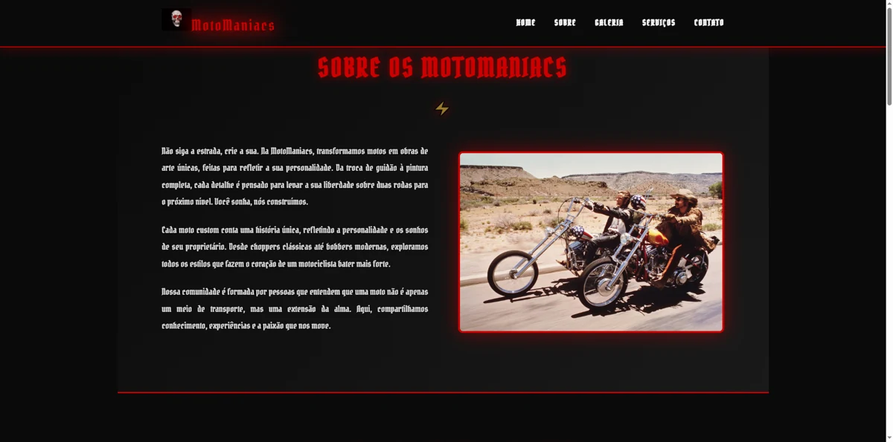
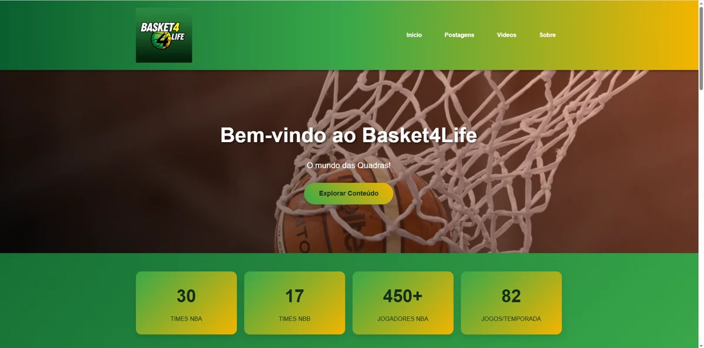
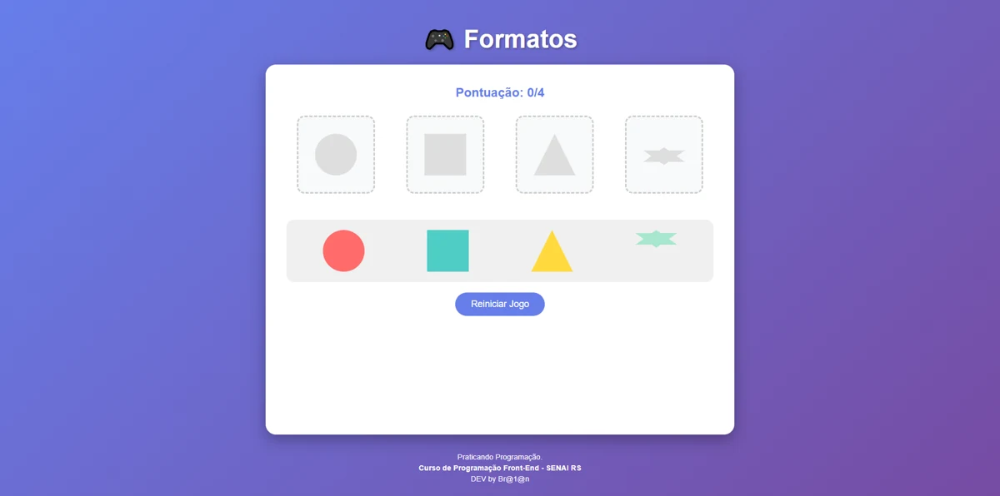

WEBSITE / PRESENÇA DIGITAL
MotoManiacs
Uma presença digital com a personalidade de uma oficina de preparações. Estrutura, identidade visual e navegação para apresentar o negócio.
DESENVOLVEDOR FRONT-END
Sua ideia.
O próximo código que eu escrevo.
Construo interfaces web com atenção ao visual, à experiência de quem usa e aos detalhes que fazem a diferença.
01 / TRABALHOS SELECIONADOS
Projetos que conectam o que eu aprendo com o que gosto de construir.

Uma presença digital com a personalidade de uma oficina de preparações. Estrutura, identidade visual e navegação para apresentar o negócio.

Minha paixão pelo basquete também vira interface. Um blog pensado para organizar conteúdo e aproximar os fãs do esporte.

Aprender brincando, uma forma de cada vez. Um jogo de associação de figuras que explora lógica, eventos e interação com JavaScript.
02 / QUEM ESTÁ NO TECLADO
Gosto de entender como as coisas funcionam.
E de descobrir como fazê-las funcionar melhor.
Meu caminho no Front-end passa pelos estudos de programação no SENAI e pela prática: construir, testar, encontrar um problema e voltar ao código para resolver.
Dos sites de motos e basquete a um jogo educativo, exploro diferentes formas de transformar conteúdo em experiências. Trabalho com HTML, CSS e JavaScript, com atenção à organização das interfaces e ao comportamento em diferentes telas.
Estou construindo minha trajetória em desenvolvimento e busco oportunidades para aprender com outras pessoas, contribuir com projetos e evoluir a cada entrega.
Conheça minha trajetória no LinkedIn03 / MEU AMBIENTE DE CONSTRUÇÃO
Uma base em constante evolução, aplicada em projetos de verdade.
Estrutura semântica e conteúdo organizado para a web.
Layouts, responsividade e identidade visual em cada detalhe.
Lógica, manipulação do DOM e interações no navegador.
Versionamento e organização da evolução dos projetos.
Componentes e sistemas de layout para criar interfaces.
Expandindo a base em React e novas práticas de Front-end.
NADA É POR ACASO.
Um pouco de Matrix. Muito espaço para criar.
04 / VAMOS NOS CONECTAR
Tem uma ideia, uma oportunidade ou um desafio?
Vamos conversar sobre o que podemos construir.